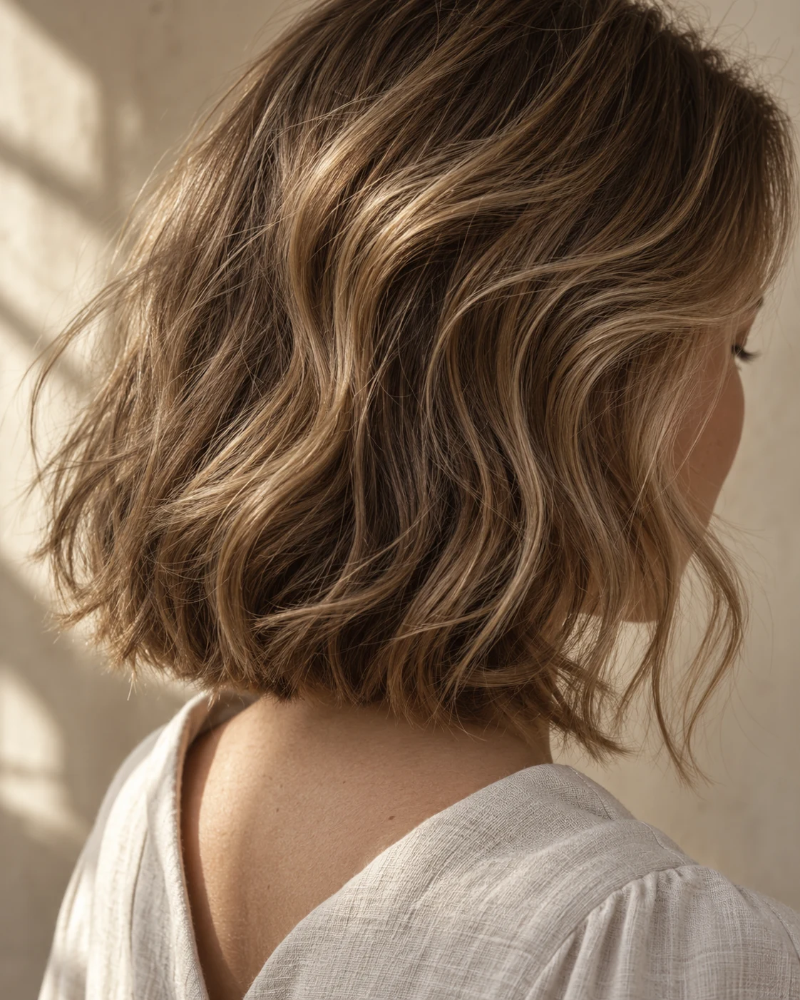
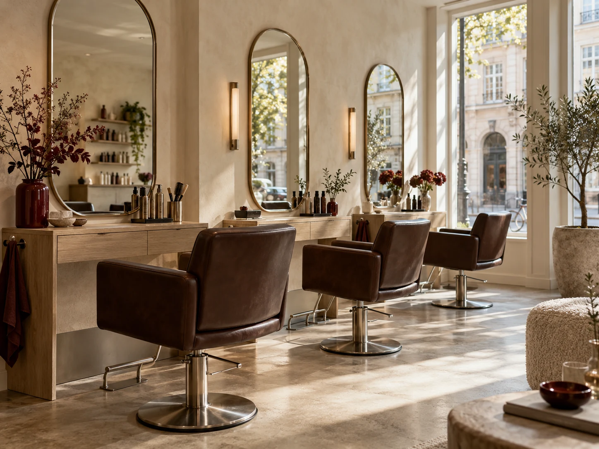

Klip
Fra en let opfriskning til en helt ny retning. Vi tager udgangspunkt i dit hår og din hverdag.
Dameklip · 45 min. · 545 kr.Dit lille pusterum på Trøjborg
Til dig, der vil føle dig som dig selv. Bare med lidt bedre hår. Vi giver os tid til både samtalen, detaljen og den sidste finish.

Hos os begynder det med dig
En ny form, mere bevægelse eller din sædvanlige klipning. Vi lytter til det, du gerne vil — og finder et udtryk, der også fungerer, når du selv står foran spejlet i morgen.
Tre frisører.
Tre par hænder.
Én kunde ad gangen.
Det vi gør
Fra en let opfriskning til en helt ny retning. Vi tager udgangspunkt i dit hår og din hverdag.
Dameklip · 45 min. · 545 kr.Bløde overgange, mere dybde eller lidt mere mod. Vi taler om farven, før vi går i gang.
Hel farve · 90 min. · fra 945 kr.Til en særlig aften eller bare en god hårdag. En finish med ro, hold og personlighed.
Vask og føn · 30 min. · 325 kr.Priser og varigheder er eksempler. Se hele indholdet og eventuelle forbehold på behandlingssiden.

Velkommen indenfor
På hjørnet af Eksempelgade finder du tre stole, dagslys gennem vinduerne og tid til at sænke skuldrene.
Du behøver ikke kende navnet på din næste frisure. Fortæl os, hvad du godt kan lide ved dit hår — og hvad du savner.
Vi finder formen sammenMenneskene bag saksen
Du er velkommen hos os alle tre.
Vælg en bestemt frisør, eller tag den første ledige tid.
Klip & farve
Til dig, der vil finde en form, der følger dit eget hår. Fra små justeringer til en frisk begyndelse.
Book hos IdaFarve, striber & opsætning
Til dig, der vil lege med farver, bløde kontraster eller en finish til en særlig anledning.
Book hos SofieHerreklip & korte frisurer
Til dig, der sætter pris på en skarp kant, en god form og en klipning, der er let at holde.
Book hos JonasLige rundt om hjørnet
Du finder indgangen på hjørnet. Der er cykelstativ ved døren og gadeparkering med p-skive i begge gader.
Book dit besøg| Tirsdag–fredag | 9.00–18.00 |
|---|---|
| Lørdag | 9.00–14.00 |
| Søndag & mandag | Lukket |
Telefon 00 00 00 00
Vi tager telefonen mellem kunderne.